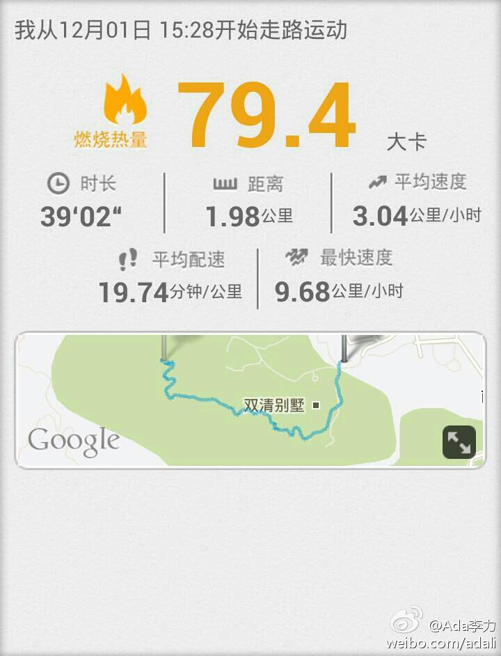

#社区运营# <浪潮之颠>有个主要观点是，IT发展不均衡，是像波浪一样。选对势和时机，比努力更重要。炒股也有类似说法，站在风口上，猪都能飞上天。- IT技术社区那么多，兴起，繁盛，低落，甚至消亡，一样遵循波浪规律。运营更需要的是判断力，判断哪些技术社区会站在浪头上。
#社区运营# 为什么有些技术名词会流行，社区热火朝天，有些就不会？ 撇开市场需求说，这很可能就如时尚产业一般，几位大佬突发灵感，说今年流行橄榄色，于是国际时尚报道宣传，时装周展示，国内媒体也邀请著名人士大谈流行趋势，再后来，就能看到高档店铺铺货，淘宝店宣称进了今年最流行的橄榄色衣服。
#社区运营# 服装有流行大卖的，也有各种各样很小众的风格。技术社区也一样，有很流行，获得众星捧月般待遇的社区，有偏居一隅，只有少量小众粉丝的社区。它们都有自己的存在理由和存在方式。社区运营无规律可循的原因，多指社区的多样化。
又是平衡话题。[呵呵]//@高筱筱:无论哪种类型的社区都需要有存在的价值。这个又得从两个方面看:社区对用户的价值。体现在用户对社区的各类活动的参与度；社区对于所属公司的价值，体现在对销售订单带来的增量。但，很多时候，这两方面又有冲突。把握好这个度是个很关键的问题。@Ada李力:#社区运营# 服装有流行大卖的，也有各种各样很小众的风格。技术社区也一样，有很流行，获得众星捧月般待遇的社区，有偏居一隅，只有少量小众粉丝的社区。它们都有自己的存在理由和存在方式。社区运营无规律可循的原因，多指社区的多样化。
把52集<易中天品三国>听完了，心理揣测的倒是自己要不要接受它的影响。易中天对一些历史疑案进行一家之言分析，都说是出于对人性的了解，而他所说的人性，很重要的一点就是人天生是不信任他人的，所以会生出那么多的故事和阴谋。
我看过一些心理书籍，其中对一条人际交往规则印象颇深，实验和博弈论得出的最佳指导经验是: ”以善为始，以牙还牙" - 就是说，在不了解对方的情况下，先假设对方是好人。如果对方以善回报，那交往进入良性循环，如果对方以恶回报，那一定要以施以惩罚，而不能息事宁人。
对这条心理学提出的人际交往最佳策略，我印象颇深，也和自己经历有关。我自小被冠以憨的绰号，谈朋友时也被人称傻，不是指智商，而是指容易相信人。── 但长到现在，我一直活得好好的，遇到善人很多，恶人极少。没吃过什么大亏，也是因为我对恶人绝不姑息。
今天总算喊着明俊和姣姣去爬了香山，只爬到半山平台处。从家里出发到回到家，不到两个小时。这次爬山的很大动因是手机上装了运动软件，要试验记录下。 -- 我 刚使用#咕咚运动+#完成追踪走路运动1.98公里,用时39分钟,平均速度3.04公里/小时,燃烧79.4大卡。快来和我一起运动吧！ 